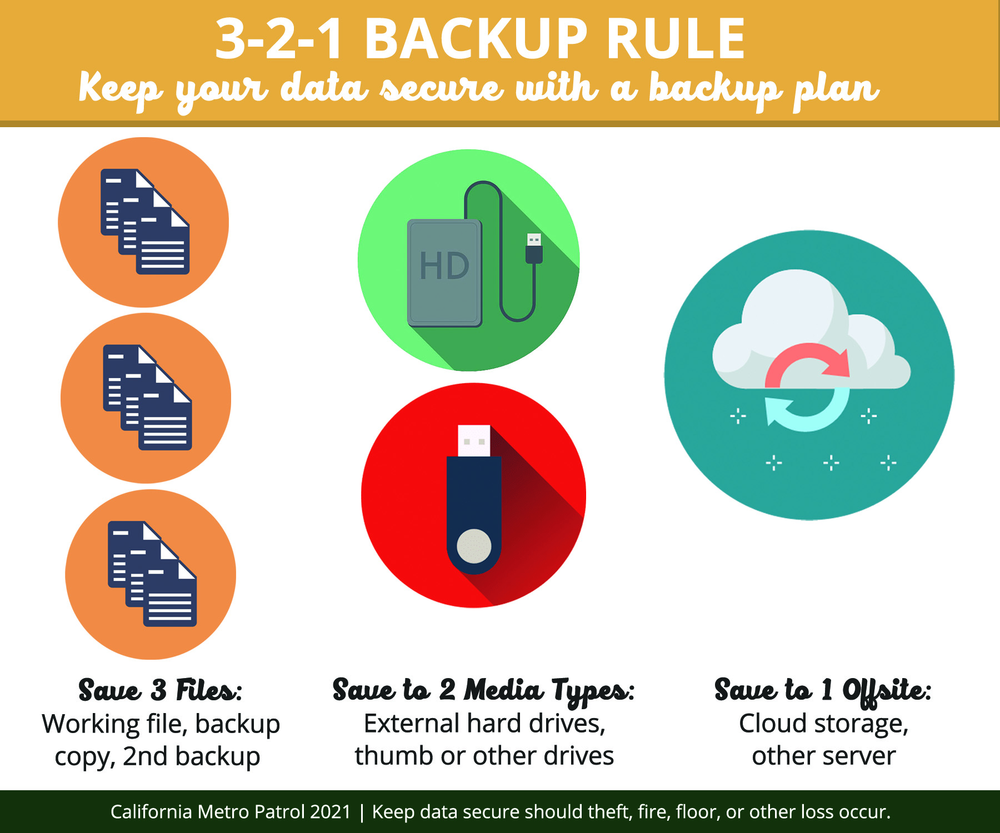

Based on the feedback :
The average CMMI maturity level of Project 1 is
3.75
The average NASA Technology Readiness Level is
7.75
It seems that the project is generally in a good state of maturity and readiness. The average CMMI maturity level of 3.75 suggests that the project has well-defined processes and also with an average NASA TRL of 7.75, the project's technologies are approaching a state where they are nearly ready for operational use, with only minor integration or testing remaining.
The CSC 543 portfolio's US-CERT 3-2-1 Data Backup status is good. Backups are stored in three places: OneDrive, GitHub, and a local drive.
To optimize the CSC 543 portfolio's US-CERT 3-2-1 Data Backup status, one path is to automate backups. This means using software to regularly save data to OneDrive, GitHub, and a local drive. Also, it's important to check backups regularly to make sure they work. Another way is to use a portfolio platform for resumes, which could offer better organization and access to my work.
The current NIST CSF2 PR.DS compliance of the CSC 543 portfolio involves ensuring the confidentiality, integrity, and availability of data at rest (PR.DS-01), data in transit (PR.DS-02), and data in use (PR.DS-10). Additionally, backups of data are created, protected, maintained, and tested (PR.DS-11).
My current methodology for backing up the CSC 543 portfolio partially satisfies NIST CSF2 PR.DS requirements.
Storing backups on OneDrive, GitHub, and a local drive aligns with protecting data at rest (PR.DS-01) and backup creation (PR.DS-11).
However, additional measures may be needed for data in transit (PR.DS-02) and data in use (PR.DS-10) compliance, such as ensuring secure transfers and protecting data during access.
I believe regularly reviewing and updating backup procedures to ensure they meet compliance requirements can further enhance PR.DS-11 compliance.